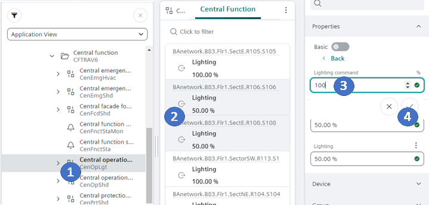

Central Room Functions
The central function overrides local room operation. The required operating mode in the room can be commanded again after successful central override.
Multiple selection is possible on all switching functions as long as the sources are from the same object type.
